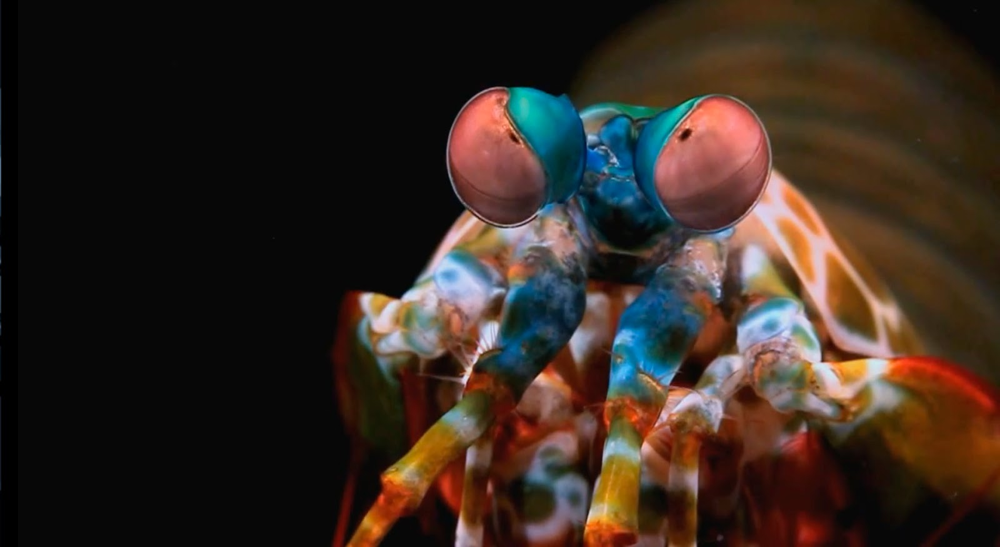

Fatos sobre o Stomatopoda
Informações

Nome científico: Odontodactylus scyllarus
- Reino: Aimalia
- Filo: Arthropoda
- SubFilo: Crustacea
- Classe: Malacostraca
- Subclasse: Hoplocarida
- Ordem: Stomatopoda
Sobre
Os estomatópodes são predadores ativos que caçam presas com o auxílio de um sentido de visão muito apurado e capaz de interpretar polarização no espectro ultravioleta e infravermelho). Apresentam uma grande variação de tamanho, que pode ir de poucos milímetros até aproximadamente 40 cm nas espécies maiores.
Curiosidades

Esses animais possuem o mais complexo sistema de visão de cores do mundo animal,
pois enxergam 12 cores primárias, correspondentes aos 12 pigmentos distintos presentes
em sua retina.
Fato engraçado:
Um ataque de uma garra de camarão mantis é tão forte que pode quebrar o vidro do aquário.
Tamanho médio: 10 centímetros (3,9 pol.), dieta carnívora e vida útil estimada em 20 anos.
Referências Bibliográficas
WikipédiaFiggy's